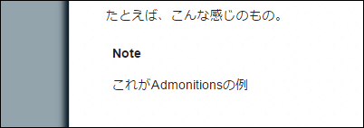
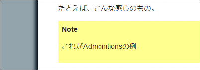

Tinkererのテーマをカスタマイズする
このサイトではTinkererってブログツールのmodern5ってテーマを使って 作っている。先日のエントリを書くときに、Admonitionの背景に色が つかなかったので、テーマをカスタマイズした。そのときのメモ。
Admonitionとは
エントリ書いているときに、途中でちょっとした注意書きとか、 知っておいてほしいこととかを小さなブロックを作って書く、あれ。
たとえば、こんな感じのもの。
Note
これがAdmonitionの例
reStructuredText Directives [1] によると、Admonitionには “attention”, “caution”, “danger”, “error”, “hint”, “important”, “note”, “tip”, “warning”, “admonition” といったものがあるらしい。
テーマカスタマイズのポイント
modern5テーマでレンダリングすると、次のイメージのように、背景が 白のままになるため、Admonitionであるかどうかがわかりにくい。
背景に薄い黄色を入れることで、Admonitionであることをわかりやすく してみたい。
カスタマイズの手順
新しいテーマを、modern5plusという名前にして作業を進める。
テーマディレクトリを作る
$ cd /path/to/blogroot
$ mkdir -p _themes/modern5plus/static
テーマ設定ファイルを書く
_themes/modern5plus/theme.conf に次の4行を書く。
[theme]
inherit = modern5
stylesheet = modern5plus.css
pygments_style = native
スタイルシートをカスタマイズする
ブラウザの Developer Tools で追いかけると、Admonitionの箇所のdivタグには class属性に admonition が指定されている。
modern5のスタイルシートを継承して、div.admonitionに背景色を指定する。
_themes/modern5plus/static/modern5plus.css_t に次の2行を書く。
@import url("modern5.css");
div.admonition { background: #FFFF90; }
作ったテーマを使う
最後に conf.py の中の html_theme に modern5plus を指定する。
# Pick another Tinkerer theme or use your own
html_theme = "modern5plus"
以上で完成。
脚注
| [1] | reStructuredText Directives |